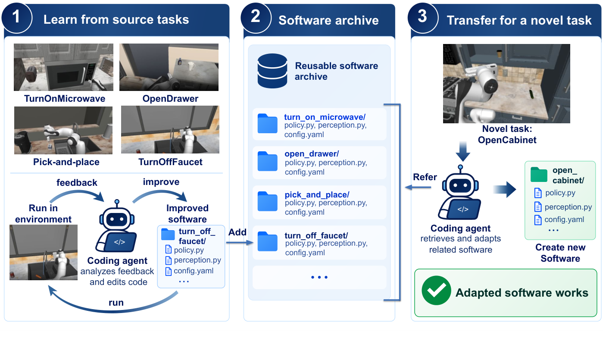
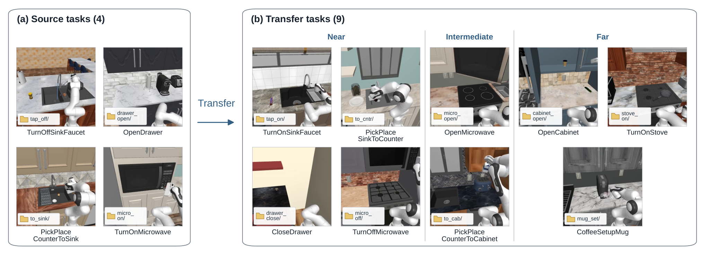

로봇 제어 정책을 신경망 가중치가 아니라 파이썬 코드로 만든다. 코딩 에이전트(LLM이 코드를 쓰고 실행 결과를 보고 고치는 자동화 도구)가 시연 10개로 첫 코드를 만들고, 시뮬레이션 실행 피드백으로 5세대까지 고친다. 이렇게 소스 태스크 4개(수도꼭지 끄기·서랍 열기 등)에서 평균 Test 성공률이 28.3%→64.2%로 오른다. 개선된 코드들은 "소프트웨어 아카이브"(태스크별 완성 코드 폴더 모음)에 저장된다. 새 태스크 9개에서 이 아카이브를 참고하게 하면, 3회 반복 평균 성공률이 57.0%였다. 참고 코드가 없을 때는 45.2%, 개선 전 초기 코드를 참고할 때는 41.5%였다. 즉 "실행 경험으로 다듬어진 코드"가 새 정책을 만드는 재료로서 가치가 있다. 다만 9개 중 2개 태스크에서는 초기 코드 참고가 더 나았다.
폐루프(closed-loop) 정책은 매 스텝 새 관찰을 보고 행동을 다시 정하는 제어기다. 이를 코드로 짜려면 세 가지가 필요하다. 물체 인식 같은 관찰 처리, "지금 잡는 중인가/옮기는 중인가" 같은 상태(phase) 관리, 그리고 상황별 조건 분기다. 태스크마다 사람이 이를 설계·튜닝하는 비용이 크다.
Code as Policies(LLM이 인식·제어 API를 호출하는 프로그램을 생성해 정책으로 쓰는 접근) 이후, 실행 피드백으로 제어 코드를 다시 쓰는 연구가 늘었다. 이런 연구는 코드를 "경험으로 갱신되는 정책 표현"으로 본다. 그렇다면 신경망 가중치가 새 태스크 학습의 출발점이 되듯, 개선된 코드도 새 태스크의 재료가 될 수 있는가?
문제는 이것이 자명하지 않다는 점이다. 최적화 중 추가된 조건 분기와 제어 루틴은 소스 태스크 조건에 과특화(over-specialized)될 수 있다. 그러면 오히려 다른 태스크로의 전이를 방해한다. 기존 연구는 계획(planner) 수준 코드만 저장하거나(MTP, Memory Transfer Planning), 경험을 "스킬 함수"로 따로 추출해 저장했다. 반면 관찰 처리·상태 관리·조건 로직을 모두 포함한 완성 구현 전체를 저장해 참고시키는 것의 가치는 검증되지 않았다.
식 (1)은 두 줄이다. 첫 줄은 "시뮬레이터 상태에서 허용된 관찰만 꺼낸다"는 뜻이다. 둘째 줄은 "관찰과 내부 상태를 받아 행동과 다음 내부 상태를 낸다"는 뜻이다.
ot = 𝒪ω(xt), (at, ht+1) = P(ot, ht; q)
코딩 에이전트 𝒜B는 태스크 지시문, 성공 시연 𝒟q, 관찰–행동 인터페이스 명세 ℐω를 받는다(B는 생성 예산). 결과물은 policy.py, perception.py, config.yaml 등으로 이뤄진 실행 가능한 정책 패키지다. 완성된 정책은 실행 중 LLM을 전혀 호출하지 않는다.
소스 태스크의 초기 상태 케이스들은 서로 겹치지 않는 세 묶음으로 나뉜다. Train은 코드 수정용 실행 경험을 준다. Validation은 후보 코드 비교·선택에 쓰인다. Test는 선택된 최종 코드의 평가에만 쓰이고, 수정에는 절대 쓰이지 않는다.
식 (2)는 "K세대(초기 생성 포함) 후보 중 Validation 성공률이 가장 높은 코드를 고른다"는 뜻이다.
Ps★ ∈ argmaxP ∈ {Ps(0),…,Ps(K−1)} Ĵ𝒞sval(P)
여기서 Ĵ𝒞(P)는 케이스 집합 𝒞에서 정책 P의 성공률이고, 𝒞sval은 소스 태스크 s의 Validation 케이스다. 선택된 코드들의 모음이 아카이브 ℳ = {Ps★ | s ∈ 𝒮}다. 실행에 필요한 코드와 자산만 저장한다. 소스 실행 로그나 평가기 내부는 저장하지 않는다. 또한 "재사용 스킬"로 따로 정제하지 않고 구현 전체를 그대로 둔다.
식 (3)은 "새 태스크 q의 초기 정책을, 기존 입력에 아카이브까지 더해 생성한다"는 뜻이다.
P̃q(0) = 𝒜B(q, 𝒟q, ℐω, ℳ)
| 방법 | 시연/태스크 | 실행 시 입력 | Faucet | Drawer | Pick→Sink | Microwave | 평균 |
|---|---|---|---|---|---|---|---|
| A. 코드 정책 · 온라인 제어 · 같은 시연 수의 모방학습 | |||||||
| Iterative software (제안, 5세대 최적화) | 10 | Full | 56.7 | 70.0 | 76.7 | 53.3 | 64.2 |
| First executable software (최적화 전 첫 코드) | 10 | Full | 33.3 | 3.3 | 26.7 | 50.0 | 28.3 |
| GPT-6 Astra online (LLM이 매 순간 짧은 행동열 직접 생성) | 10 | Full | 70.0 | 50.0 | 60.0 | 26.7 | 51.7 |
| BC-Transformer-10 (시연 10개로 태스크별 행동복제 학습) | 10 | RGB 3 + proprio | 23.3 | 6.7 | 3.3 | 3.3 | 9.2 |
| B. 공개 멀티태스크 체크포인트 (학습 조건이 달라 참고용) | |||||||
| GR00T N1.5 | 100 | RGB 3 + state | 66.7 | 56.7 | 90.0 | 36.7 | 62.5 |
| π0.5 / Human300 | 100 | RGB 3 + state | 50.0 | 80.0 | 83.3 | 20.0 | 58.3 |
| π0 / Human300 | 100 | RGB 2 + state | 46.7 | 30.0 | 66.7 | 6.7 | 37.5 |
| Diffusion Policy / Human300 | 100 | RGB 3 + proprio | 26.7 | 13.3 | 30.0 | 10.0 | 20.0 |
Human300 = RoboCasa365의 사람 시연 300개 기반 공개 체크포인트(여기선 태스크당 100 시연으로 표기). proprio = 로봇 자기수용 상태(관절 등). 각 열의 최고값을 초록색으로 표시.
세 조건은 이렇다. No reference는 참고 코드 없이 생성. Initial4는 소스 4개 태스크의 "최적화 전 첫 실행 가능 코드" 4개를 읽기 전용으로 제공. Best4는 같은 4개 태스크의 "Validation으로 고른 최적화 코드" 4개를 제공. 시연·관찰·케이스·예산은 모두 같다. 타깃은 과제 구조 유사도로 나뉜다. Near는 비슷한 기구에서 조작이나 방향만 바뀐 것(예: 수도꼭지 끄기→켜기). Intermediate는 같은 가전의 다른 조작이나 배치 맥락 변화. Far는 다른 기기·다른 조작이다.
| 구분 | 타깃 태스크 | No reference | Initial4 | Best4 |
|---|---|---|---|---|
| Near | TurnOnSinkFaucet (수도꼭지 켜기) | 90.0 ± 17.3 | 76.7 ± 32.1 | 90.0 ± 10.0 |
| Near | PickPlaceSinkToCounter (싱크→조리대 옮기기) | 60.0 ± 52.0 | 0.0 ± 0.0 | 70.0 ± 20.0 |
| Near | CloseDrawer (서랍 닫기) | 70.0 ± 52.0 | 86.7 ± 5.8 | 93.3 ± 11.5 |
| Near | TurnOffMicrowave (전자레인지 끄기) | 3.3 ± 5.8 | 76.7 ± 15.3 | 60.0 ± 10.0 |
| Intermediate | OpenMicrowave (전자레인지 문 열기) | 80.0 ± 17.3 | 23.3 ± 40.4 | 83.3 ± 20.8 |
| Intermediate | PickPlaceCounterToCabinet (조리대→찬장 옮기기) | 63.3 ± 23.1 | 53.3 ± 23.1 | 56.7 ± 32.1 |
| Far | OpenCabinet (찬장 문 열기) | 23.3 ± 20.8 | 40.0 ± 10.0 | 40.0 ± 10.0 |
| Far | TurnOnStove (가스레인지 켜기) | 16.7 ± 15.3 | 6.7 ± 11.5 | 20.0 ± 20.0 |
| Far | CoffeeSetupMug (커피머신에 머그 놓기) | 0.0 ± 0.0 | 10.0 ± 17.3 | 0.0 ± 0.0 |
| 평균 (9태스크, 3회) | 45.2 ± 10.3 (122/270) | 41.5 ± 10.5 (112/270) | 57.0 ± 7.8 (154/270) | |
표준편차는 개별 Test 케이스가 아니라 독립 정책 생성 실행 3회 간의 변동. StartCoffeeMachine은 알려진 평가 문제로 제외.
Ablation(구성 요소를 하나씩 빼서 기여도를 보는 실험)이다. 조건마다 코드를 처음부터 새로 생성·최적화했다. 규모는 태스크당 Train 5 / Validation 5 / Test 10, 3세대 최적화로 Table I보다 작다. 지시문·카메라 보정·로봇 상태·행동 이력은 모든 조건에 공통으로 제공된다.
| 관찰 조건 | Faucet | Drawer | Pick→Sink | Microwave | 평균 (%) | Δ Full (%p) |
|---|---|---|---|---|---|---|
| RGB only (3D·GT-Geom·Contact 모두 제거) | 2/10 | 4/10 | 2/10 | 1/10 | 22.5 | −42.5 |
| Without metric 3D (깊이·포인트 제거) | 8/10 | 10/10 | 7/10 | 2/10 | 67.5 | +2.5 |
| Without GT-Geom (정답 마스크·라벨 제거) | 5/10 | 8/10 | 1/10 | 0/10 | 35.0 | −30.0 |
| Without contact (접촉 신호 제거) | 8/10 | 9/10 | 6/10 | 5/10 | 70.0 | +5.0 |
| Full | 10/10 | 9/10 | 6/10 | 1/10 | 65.0 | 0.0 |
if/elif 문 총수(테스트 코드 제외)는 Initial4 622개에서 Best4 741개로 늘었다(+19.1%). 4개 구현 모두 증가했고, 전자레인지 켜기 코드는 138→225개로 가장 많이 늘었다.

Figure 2: 소스 태스크 4개의 세대별 Train/Validation 성공률 곡선(각 10케이스). 두 곡선이 함께 상승함.
아직 추가 질문이 없습니다. 이 논문에 대해 더 궁금한 점을 물어보시면 답변을 여기에 정리해 추가합니다.